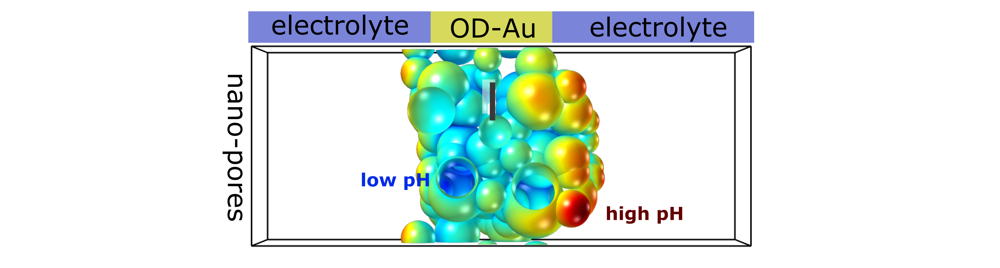

Multi-scale modeling

For a long time, planar, crystalline electrodes have been predominantly used to catalyze energy conversion processes. The simplicity of these systems enabled DFT simulations to unravel binding energy descriptors for electrocatalytic activity and develop efficient catalyst screening approaches. However, the intrinsic limitations of electrode engineering in two dimensions has triggered developments towards the use of 3D-structured electrodes. Nowadays, in particular the use of porous electrodes, enables to selectively design the arrangement, strain, environment and volume density of active sites and maximize the mass-loading based activity of expensive catalysts. Porous electrodes are thus a state-of-the-art means for many electrochemical reactions, such as ORR, HER and OER. Particularly strong effects have been found for CO2 and CO reduction, with critical enhancements of valuable C2+ (carbohydrates and alcohols at least two carbon atoms) product formation on copper, and CO formation on gold and silver. Despite the significance of these effects in a wide range of energy conversion processes, the physical complexity of the systems has largely limited a detailed understanding and strategic design of porous electrodes. The goal of this NRF-funded project is to develop a cutting edge multi-scale framework for modeling electrochemical energy conversion in nano-structured electrodes. Ultimately, this is expected to lead to generalized design principles that take both mass transport and reaction kinetics into account.
Related research projects/funds:
- Samsung Electronics collaboration fund
Related publications 9
-
First-principles multi-scale design of gas diffusion electrodes for electrochemical CO2 reduction
R. V. Adith et al., Energy Environ. Sci. 2026.
-
Understanding the role of gas diffusion electrodes in steering the CO2 electroreduction pathway
Y. Jung et al., Nano Energy 2025, 147, 111602.
-
Spatiotemporal Nitric Oxide Modulation via Electrochemical Platform to Profile Tumor Cell Response
C. Won et al., Angew Chem Int Ed Engl 2024, 63, e202411260.
-
Alkali Metal Ion Substituted Carboxymethyl Cellulose as Anode Polymeric Binders for Rapidly Chargeable Lithium-Ion Batteries
S. Byun et al., Energy Environ. Mater. 2022, 7, e12509.
-
Using pH Dependence to Understand Mechanisms in Electrochemical CO Reduction
G. Kastlunger et al., ACS Catal. 2022, 12, 4344 - 4357.
-
On the importance of the electric double layer structure in aqueous electrocatalysis
S. Shin et al., Nat. Commun. 2022, 13, 174.
-
Double layer charging driven carbon dioxide adsorption limits the rate of electrochemical carbon dioxide reduction on Gold
S. Ringe et al., Nat. Commun. 2020, 11, 1 - 11.
-
Understanding cation effects in electrochemical CO2 reduction
S. Ringe et al., Energy Environ. Sci. 2019, 12, 3001 - 3014.
-
pH effects on the electrochemical reduction of CO2 towards C2 products on stepped copper
X. Liu et al., Nat. Commun. 2019, 10, 32.